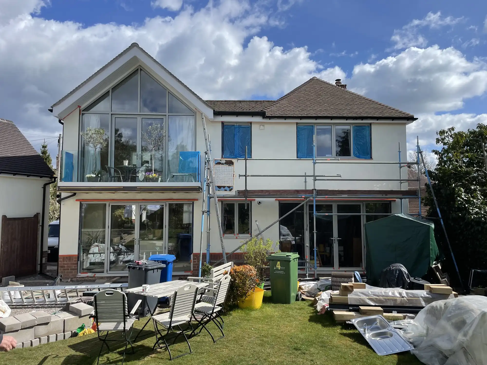
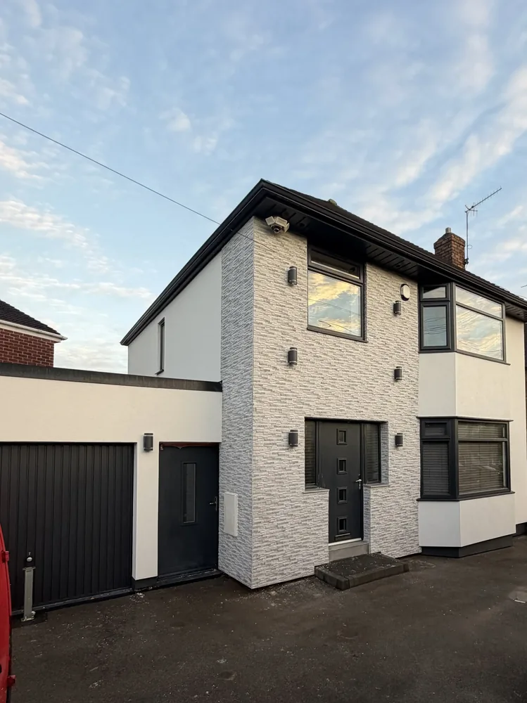
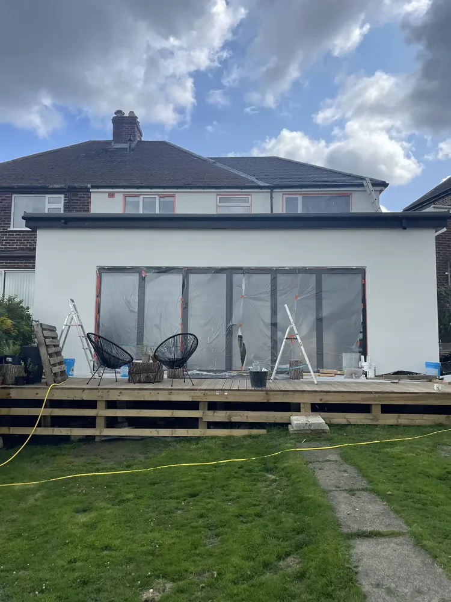
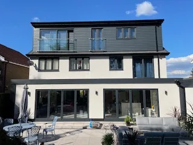

Projects Across Sheffield & South Yorkshire.

Chesterfield
Detached property
Full render strip and re-render. Ecorend premium silicone in Light Buff. Scaffold erected and struck within the project timeline.
Request Similar ↗
Ecclesall, S11
Semi-detached property
K Rend silicone finish applied over existing sound pebbledash. Substrate assessed, base coat reinforced with mesh before the silicone top coat.
Request Similar ↗
Grenoside, S35
Terraced property
Self-cleaning silicone on a traditional terraced house. Partial strip to failing areas, mesh reinforcement, Ecorend White finish throughout.
Request Similar ↗
Stannington, S6
Period property
Baumit premium system chosen for its flexibility on older masonry substrates. Warm Stone colour. Fully weather-resistant and breathable finish ideal for period properties.
Request Similar ↗
Sandygate, S10
Detached property — all four elevations
Full silicone render system covering all four elevations. Ecorend premium Cream finish — self-cleaning properties keep this Sandygate property pristine year-round.
Request Similar ↗